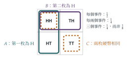

STEP III 2021，第 12 題
繼續之前，請先閱讀題目（原題為英文）。題目載於 OCR 提供下載的 2021 年 STEP 試卷（zip 檔案）內的 STEP III 試卷： www.ocr.org.uk/Images/696588-2021-past-papers.zip
引子
玩家 \(1\) 和玩家 \(2\) 擲出相同的點數。這能告訴你玩家 \(2\) 和玩家 \(3\) 是否擲出相同點數嗎？出人意料的是，不能：這兩個事件是獨立（independent）的。玩家 \(1\) 和玩家 \(3\) 的情況也一樣。但如果 \(1\) 與 \(2\) 相同，而 \(2\) 又與 \(3\) 相同，那麼 \(1\) 必定與 \(3\) 相同。三個事件，每兩個之間都獨立，合起來卻不獨立。
兩兩獨立（pairwise independence）比完全獨立弱，而這個差別至關重要。就方差（variance）而言，兩兩獨立已經足夠，本題正是利用了這一點。但在許多其他用途上，這並不足夠。電腦科學家會刻意使用兩兩獨立的隨機數，因為產生它們的成本遠低於產生完全獨立的隨機數，而對許多演算法來說已經夠用。
動筆之前
\(\mathrm{P}(X_{12} = 1)\) 是多少？\(\mathrm{P}(X_{12} = 1 \text{ 及 } X_{23} = 1)\) 又是多少？
無論玩家 \(1\) 擲出甚麼，玩家 \(2\) 與之相同的概率都是 \(\frac16\)。\(X_{12} = 1\) 和 \(X_{23} = 1\) 同時成立，即三人擲出相同的點數：概率為 \(\frac{6}{216} = \frac{1}{36}\)。
逐步解題
階段 1 兩兩獨立
由於 \(\mathrm{P}(X_{12} = 1, X_{23} = 1) = \frac{1}{36} = \frac16 \cdot \frac16 = \mathrm{P}(X_{12} = 1)\mathrm{P}(X_{23} = 1)\)，而每個變量只取兩個值，所以 \(X_{12}\) 與 \(X_{23}\) 獨立。（對於只取兩個值的變量，聯合分佈表中的一格便決定了其餘各格；練習 1 會把這一點說清楚。）沒有共同玩家的兩對，例如 \(X_{12}\) 與 \(X_{34}\)，顯然是獨立的。因此所有 \(X_{ij}\) 都兩兩獨立。
階段 2 得分的平均值與方差
得分為 \(S = \sum_{i<j}X_{ij}\)，是 \(\binom n2\) 個變量之和，每個變量的平均值為 \(\frac16\)，方差為 \(\frac16 \cdot \frac56 = \frac{5}{36}\)。期望值（expectation）總是可以相加的，所以 \(\mathrm{E}(S) = \frac16\binom n2\)。
和的方差在甚麼時候等於方差之和？
和的方差等於方差之和，再加上協方差（covariance）之和的兩倍，而獨立的一對變量協方差為零。兩兩獨立已經足夠： \[\mathrm{E}(S) = \frac{n(n - 1)}{12}, \qquad \mathrm{Var}(S) = \frac{5}{36}\binom n2 = \frac{5n(n - 1)}{72}.\]
階段 3 方差公式
若各 \(Y_i\) 的平均值為零，則 \(\mathrm{Var}(\sum Y_i) = \mathrm{E}\bigl((\sum Y_i)^2\bigr)\)，把平方展開後，每個 \(Y_i^2\) 出現一次，每個乘積 \(Y_iY_j\)（其中 \(i < j\)）出現兩次。取期望值便得到公式。■
階段 4 奇偶遊戲
\(\mathrm{E}(Z_{12})\) 是多少？\(Z_{12}Z_{23}\) 可以取哪些值？它在甚麼時候不等於零？
\(Z_{12} = 1\) 的概率為 \(\frac{3}{36} = \frac{1}{12}\)（兩人都擲出 \(2\)、都擲出 \(4\) 或都擲出 \(6\)），而取值 \(-1\) 的概率為 \(\frac{1}{12}\)；所以 \(\mathrm{E}(Z_{12}) = 0\) 而 \(\mathrm{E}(Z_{12}^2) = \frac16\)。
只有當三位玩家都擲出相同點數時，才有 \(Z_{12}Z_{23} \neq 0\)，而此時 \(Z_{12} = Z_{23}\)（同為 \(+1\) 或同為 \(-1\)），所以乘積為 \(1\)。因此 \(\mathrm{E}(Z_{12}Z_{23}) = \frac{1}{36}\)，這並不等於 \(\mathrm{E}(Z_{12})\mathrm{E}(Z_{23}) = 0\)：它們並不獨立。■
（更直接的看法是，\(\mathrm{P}(Z_{12} = 1, Z_{23} = -1) = 0\)，而每個事件單獨發生的概率都是 \(\frac{1}{12}\)。）
階段 5 方差
總得分 \(T = \sum Z_{ij}\) 的平均值為 \(0\)。根據第 (ii) 部分，\(\mathrm{Var}(T)\) 等於 \(\binom n2 \cdot \frac16\)，再加上 \(\mathrm{E}(Z_{ij}Z_{kl})\) 對所有「兩對玩家」的組合求和後的兩倍。沒有共同玩家的兩對，貢獻為 \(0\)（它們獨立，而且各自的平均值為零）。恰好有一位共同玩家的兩對，每組貢獻 \(\frac{1}{36}\)，而這樣的組合共有 \(n\binom{n-1}{2}\) 個（先選共同的玩家，再選另外兩人）。所以 \[\begin{aligned} \mathrm{Var}(T) &= \frac{n(n - 1)}{12} + 2 \cdot \frac{1}{36} \cdot \frac{n(n - 1)(n - 2)}{2} \\ &= \frac{n(n - 1)}{36}\bigl(3 + (n - 2)\bigr) = \frac{n(n^2 - 1)}{36}. \qed \end{aligned}\]

回顧
指示變量（indicator variables）。把得分寫成指示變量之和，一切便化為對一對對玩家的考慮。
方差只需要看成對的變量。和的方差只取決於兩兩之間的協方差，所以兩兩獨立已足以令方差相加。
獨立性要驗證，不要假設。兩個看似相同的遊戲，卻有不同的相依結構。
背後的數學
多個事件的獨立性
如果對每一個子族，交集的概率都等於各概率之積，則稱事件 \(A_1, \ldots, A_n\) 獨立。對三個事件來說，這意味着四個條件：三個是關於每一對的，另一個是 \(\mathrm{P}(A \cap B \cap C) = \mathrm{P}(A)\mathrm{P}(B)\mathrm{P}(C)\)。伯恩斯坦（Sergei Bernstein）在 1920 年代提出圖 12.4.1 中的例子，說明兩兩之間的條件並不能推出三者的條件。（反過來，單憑三者的條件也不能推出兩兩之間的條件。）題目中「點數相同」的事件 \(X_{12}\)、\(X_{23}\)、\(X_{13}\) 與伯恩斯坦的硬幣如出一轍。
不相關不等於獨立
協方差為零，即 \(\mathrm{E}(XY) = \mathrm{E}(X)\mathrm{E}(Y)\)，是比獨立更弱的條件，稱為不相關（uncorrelated）。STEP III 2000 Q14（見練習）說明，對於只取兩個值的變量，這兩個概念是一致的，但取三個值時則不然。一個簡單的例子：設 \(X\) 在 \(\{-1, 0, 1\}\) 上均勻分佈，並設 \(Y = X^2\)。那麼 \(\mathrm{E}(XY) = \mathrm{E}(X^3) = 0 = \mathrm{E}(X)\mathrm{E}(Y)\)，然而 \(Y\) 完全由 \(X\) 決定。協方差只量度線性關聯。
對電腦來說，產生隨機數的成本很高。1979 年，Larry Carter 和 Mark Wegman 證明，對許多演算法而言，例如把數據儲存在偽隨機位置的雜湊（hashing），兩兩獨立的隨機選擇與完全獨立的同樣有效。兩兩獨立的數值可以用極低的成本產生：例如，取隨機的 \(a\) 和 \(b\)，則 \(a + bk \pmod p\) 對 \(k = 0, 1, \ldots, p - 1\) 給出 \(p\) 個數值，其中任何兩個都是獨立的。本題的方差計算正是它行得通的原因：切比雪夫（Chebyshev）不等式只需要方差，而方差只需要看成對的變量。
思維技巧
要求一個計數的平均值和方差，可把它寫成指示變量之和，每一個可能被數到的對象對應一個指示變量。求平均值只需要考慮單個指示變量；求方差則需要考慮成對的指示變量。
這是概率論中最有用的技巧之一，早在 第 9.8 節 已經出現過。在大學裏，隨機圖、演算法和統計檢驗的分析都以它為基礎。
延伸練習
兩個值。試做 STEP III 2000，第 14 題。該題證明，對於各自只取兩個值的隨機變量，\(\mathrm{E}(XY) = \mathrm{E}(X)\mathrm{E}(Y)\) 必然推出獨立，並要求給出一個取三個值的反例。
人數更多的隊伍。在第 (i) 部分中取 \(n = 7\)，求得分的平均值和標準差，並把例子中的得分 \(7\) 與它們比較。
再談生日。利用指示變量，求 \(k\) 個人當中生日相同的人數對的平均值和方差（第 9.9 節）。這些指示變量是否兩兩獨立？
三者成立但兩兩不獨立。找出三個事件，每個的概率都是 \(\frac12\)，滿足 \(\mathrm{P}(A \cap B \cap C) = \frac18\)，但並非兩兩獨立。
延伸閱讀
Geoffrey Grimmett & David Stirzaker, Probability and Random Processes（Oxford University Press），開首幾章討論獨立性。
Michael Mitzenmacher & Eli Upfal, Probability and Computing（Cambridge University Press）。兩兩獨立及其在演算法中的應用。
Joseph Blitzstein & Jessica Hwang, Introduction to Probability（CRC Press；可於網上免費閱讀），關於指示變量與協方差。